Wodel: a domain-specific language for model mutation
Wodel is a domain-specific language (DSL) for specifying and generating model mutants.
Wodel is independent of any particular modelling domain. It can generate mutants of models that conform to any metamodel.
Wodel provides nine mutation primitives, including object creation and deletion, reference redirection, attribute modification, cloning and retyping (changing an object's type to one of its sibling types).
For every generated mutant, the engine checks that the result is a valid model: it must conform to the domain metamodel and satisfy its integrity constraints.
Enhanced mutation features
Wodel can detect and avoid duplicate mutants. By default, equivalence is determined syntactically, although users can define their own criteria—for example, behavioural equivalence—through extension points.
When a Wodel program is executed, Wodel records the mutations applied and the model objects affected.
The IDE provides several metrics for assessing whether a mutation set is complete and correctly implemented.
The IDE can also synthesise seed models automatically, which supports the testing of Wodel programs.
The development environment is extensible and supports post-processors for different applications.
See the Wodel tutorial to begin using the language.
Current Wodel extensions
This repository contains three extensions to Wodel. The first, Wodel-EDU, automatically generates exercises for specific domains, such as automata, class diagrams and logic circuits.
The following Wodel program changes the target of a transition in a finite automaton model:
generate 2 mutants
in "data/out/"
from "data/model/"
metamodel "http://dfaAutomaton/1.0"
with commands {
modify target tar from one Transition to other State
}
The second extension, Wodel-Test, automatically generates mutation-testing tools for modelling and programming languages.
The third extension, Wodel4diac, enables the mutation of IEC 61499 industrial automation applications authored in Eclipse 4diac. It supports the systematic generation of variants of function-block applications for purposes such as mutation testing, fault seeding, robustness analysis, and the automated generation of learning exercises for industrial-automation engineering.
How Wodel works
Wodel is used through a development environment integrated in the Eclipse IDE. The following steps summarise the typical workflow, from the creation of a Wodel project to the analysis of the generated mutants.
1. Create a Wodel project
Users begin by creating a new Wodel project via File → New → Other… → Wodel → New Wodel Project. A dedicated wizard guides the user through the creation process: after naming the project, the user introduces the domain meta-model, so that the Wodel engine can load it and constrain the space of applicable mutations.
Since Wodel is domain-independent, any Ecore meta-model can be selected at this point — finite automata, UML class diagrams, logic circuits, BPMN processes, security policies, and many others.
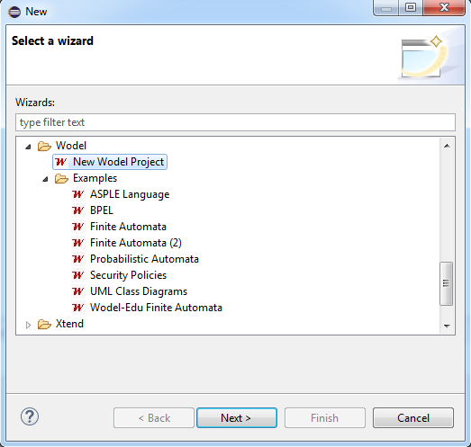
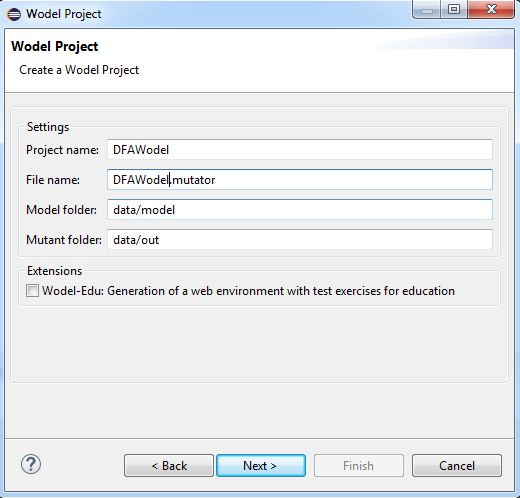
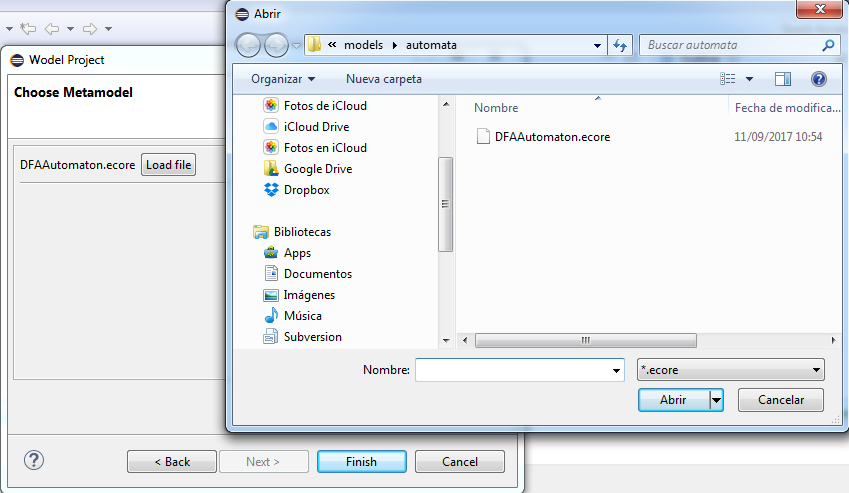
New Wodel Project wizard. Top: selection of the project type and naming of the new project. Bottom: introduction of the domain meta-model that the Wodel engine will load.
2. Write the Wodel mutation program
A Wodel program describes the mutation operators of interest and their intended execution schedule. Operators are built from the nine mutation primitives of the language, can be organised into blocks, and can be complemented with OCL constraints that every generated mutant must satisfy, as illustrated in the previous sections.
The Wodel IDE is based on Xtext and assists the developer with syntax highlighting, code completion, and code validation, easing the mutation development process.
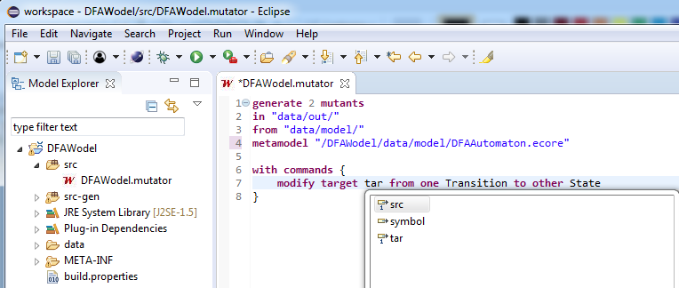
Development of a Wodel mutation program in the Wodel IDE. The Xtext-based editor provides syntax highlighting, code completion, and code validation.
3. Provide or synthesise the seed models
A Wodel program is executed over a set of seed models. Users can create their own seed models (instances of the domain meta-model), or automatically generate a battery of seed models with the seed model synthesiser provided by Wodel, which is useful to assess the validity of the mutation operators.
Seed models are synthesised by right-clicking on the .mutator file in the project explorer and selecting Wodel… → Generate seed models. The generated seed models are stored in the model folder of the project.
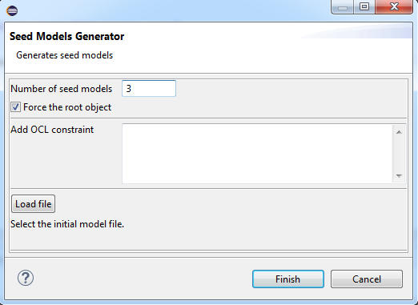
Seed model synthesis wizard. Wodel automatically generates a battery of seed models conforming to the domain meta-model, supporting the testing of the mutation operators.
4. Generate the mutants
Mutants are generated by right-clicking on the .mutator file in the project explorer and selecting Wodel… → Execute Mutations. The Wodel engine applies the mutation operators following the specified schedule, and checks that every generated mutant is a valid model: it must conform to the domain meta-model and satisfy its integrity constraints.
During this process, the engine detects and discards duplicate mutants, and records the applied mutations and the affected model objects in a registry that supports the subsequent analysis of the results.
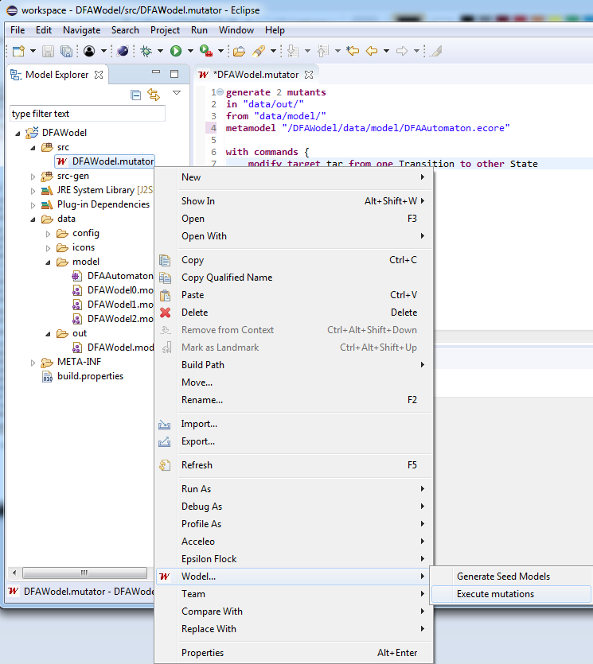
Mutant generation from the Eclipse project explorer. The Wodel… context menu gives access to mutant generation, seed model synthesis, and the other services of the framework.
5. Configure the Wodel preferences
The configurable features of Wodel are presented in three preferences pages — general, footprints, and seed model generation — accessible via Window → Preferences → Wodel.
The general preferences page allows activating the registry of applied mutations, selecting which extension is executed after the mutant generation, and configuring the maximum number of attempts performed to ensure that a mutant is unique, the maximum number of mutants generated by default, and the extension used to check mutant equivalence.
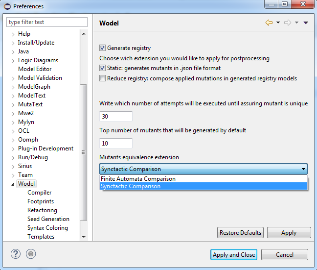
Wodel general preferences page. The user configures the mutation registry, the post-processing extension, the number of generation attempts, and the equivalence-checking extension.
6. Analyse the mutation footprints
Wodel provides several footprint views to assess whether a mutation set is complete and correctly implemented. Footprints are shown by right-clicking on the Wodel editor and selecting the desired view.
The static footprints are computed from the Wodel program. The meta-model static footprint shows which elements of the meta-model are affected by the mutations, distinguishing explicit creations (C), modifications (M) and deletions (D) from the implicit ones (IC, IM, ID) they induce. The operator static footprint presents the same information for each mutation operator separately, which helps check the static behaviour of each operator.
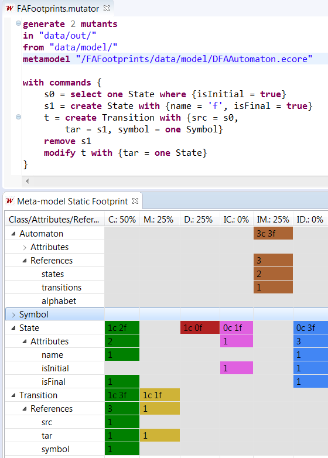
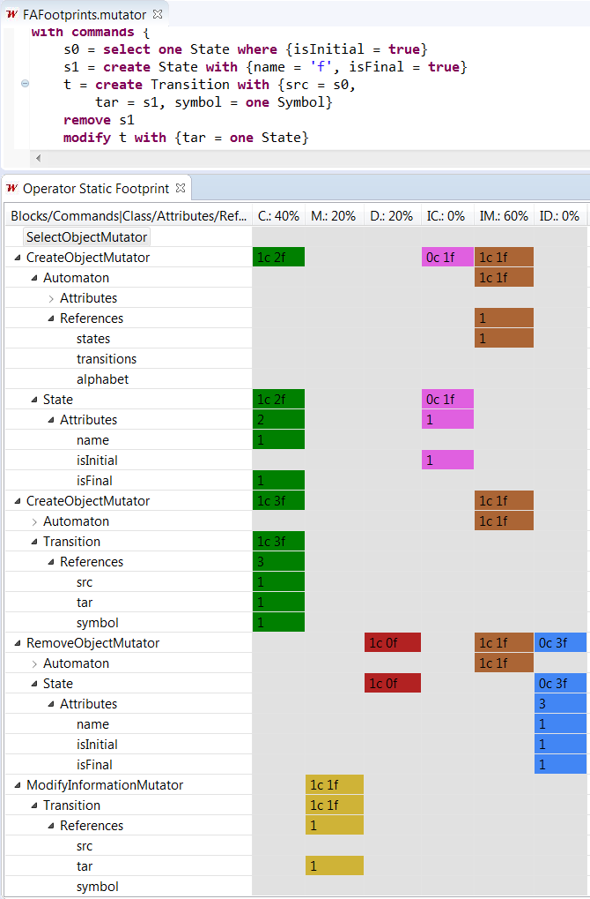
Static footprints. Left: meta-model static footprint, showing the explicit and implicit effects of the program on each meta-model element. Right: operator static footprint, detailing the effects per mutation operator.
The dynamic footprints are computed from the generated mutants. The net dynamic footprint captures the net effect of the program execution, calculated by differencing each seed model and its mutants. The debug dynamic footprint provides a detailed enumeration of the applied operators, combining the variations observed in the mutants with the information stored in the registry of applied mutations.
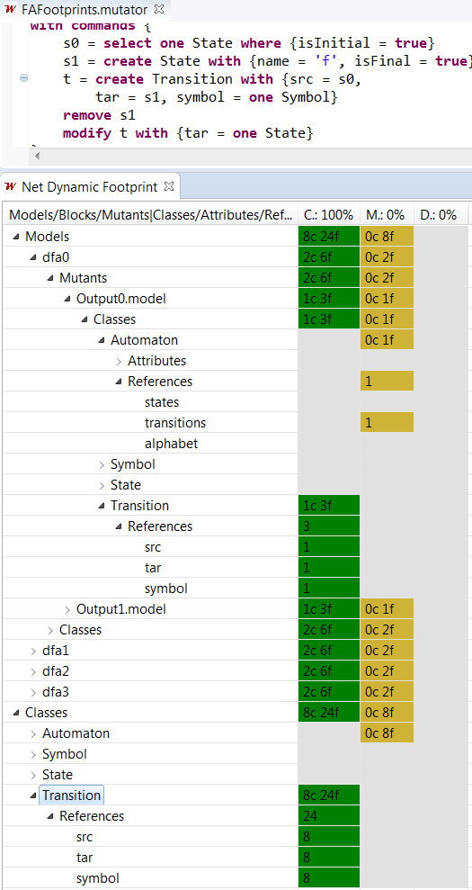
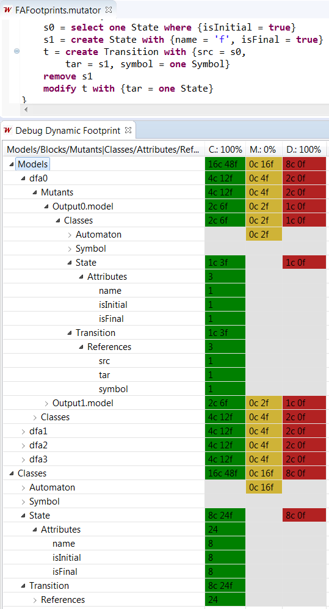
Dynamic footprints. Left: net dynamic footprint, showing the net operations with an effect on the generated mutants. Right: debug dynamic footprint, enumerating the applied operators in detail.
Architecture overview
Wodel is implemented as a modular suite of Eclipse plug-ins that integrates the complete mutation workflow into the EMF-based modelling environment. Its design separates the language definition, the mutation engine, the validation and comparison services, the analysis facilities, and the extension mechanisms, enabling extensibility and flexible integration with different modelling domains and applications.
The Wodel language is defined with Xtext, which provides the editor services of the IDE — syntax highlighting, code completion, and validation — together with the wizards for project creation and seed model synthesis, the footprint views, and the preferences pages contributed to the Eclipse workbench.
At the core of the architecture lies the Wodel engine. Wodel programs are compiled into Java code, which is executed to apply the mutation primitives following the specified block schedule. A validation subsystem checks that every mutant conforms to the domain meta-model and satisfies its integrity and OCL constraints, while a comparison subsystem detects and discards duplicate mutants. Mutant equivalence is determined syntactically by default, although dedicated extension points allow plugging in semantic comparison criteria for particular domains.
The engine records every applied mutation and the affected model objects in a mutation registry. This registry feeds the static and dynamic footprints and the mutation metrics offered by the IDE, and supports the traceability of the generated mutants. A seed model synthesiser completes the core services, automatically generating seed models that support the testing of the mutation operators.
Finally, Wodel provides extension points for post-processing applications that consume the generated mutants. Three post-processors are currently available: Wodel-EDU, for the automated generation and evaluation of diagram-based exercises; Wodel-Test, for the generation of mutation-testing tools for modelling and programming languages; and Wodel4diac, for the mutation of IEC 61499 industrial automation applications.
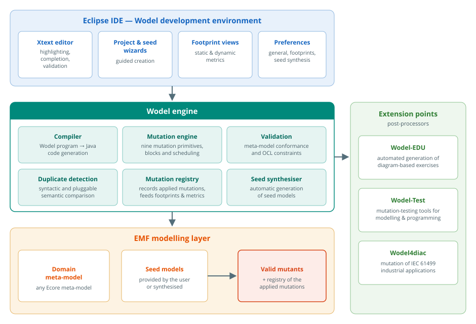
High-level architecture of Wodel. The framework integrates with Eclipse through the Xtext-based editor, wizards, footprint views, and preferences pages. The engine compiles Wodel programs into Java, generates valid mutants over EMF models, and records the applied mutations in a registry, while extension points connect the framework with the Wodel-EDU, Wodel-Test, and Wodel4diac post-processors.
Wodel usage
The blocks directive specifies when mutants are generated during the execution of a Wodel program.
A block can mutate models produced by an earlier block rather than the original seed models.
You can also define OCL constraints that every generated mutant must satisfy:
generate mutants
in "data/out/"
from "data/model/exercise1.model"
metamodel "http://dfaAutomaton/1.0"
with blocks {
first {
modify target tar from one Transition to other State [3]
} [2]
second from first repeat=no {
modify one State with { name = random-string(4,6)}
} [3]
}
constraints {
context State connected: "isInitial or Set{self}->
closure(s | Transition.allInstances()->
select(t | t.tar=s)->collect(src))->exists(s | s.isInitial)"
}
Video demos
The following short video introduces the Wodel framework:
The following video demonstrates mutation-operator footprints in Wodel:
The following video demonstrates seed-model synthesis in Wodel:
Authors and contributors
The MISO research group started the Wodel research project in September 2013. Víctor López Rivero was its main developer during the initial phase. Since March 2015, Pablo Gómez-Abajo has developed the project under the supervision of Esther Guerra and Juan de Lara. During his doctoral studies, Mercedes G. Merayo also supervised his work.
We gratefully acknowledge the developers of the following frameworks used to build Wodel:
- Xtext: Xtext supports the development of programming languages and domain-specific languages. A language is defined using its expressive grammar notation.
- Sirius: Sirius supports the creation of graphical modelling workbenches based on Eclipse modelling technologies, including EMF and GMF.
- Epsilon: Epsilon is a family of Java-based scripting languages for automating common model-driven engineering tasks, including code generation, model-to-model transformation and model validation. It supports EMF (including Xtext and Sirius), UML (including Cameo/MagicDraw), Simulink, XML and other model formats.
- OCL Tools: Eclipse OCL implements the OMG Object Constraint Language (OCL) standard for EMF-based models.
- Acceleo: Acceleo is a template-based technology for creating custom code generators. It can generate source code automatically from data represented in EMF.
- MoDisco: Eclipse MoDisco provides an extensible framework for model-driven software reverse engineering and modernisation. Its applications include technical migration, software improvement, documentation generation and quality assurance.
- ATL: ATL (ATL Transformation Language) is a model-transformation language and toolkit. It transforms one or more source models into one or more target models.
- AnATLyzer: AnATLyzer is a static analyser for ATL. This Eclipse plug-in extends the ATL IDE with features that support developer productivity.
- emfjson: The emf-json family of projects adds support for JSON and related technologies to the Eclipse Modeling Framework. It provides an alternative to EMF's default XMI serialisation format.
Related publications
- Gómez-Abajo, P., Almonte, L., Garmendia, A., Guerra, E., Cañizares, P. C., Pérez-Soler, S., López-Fernández, D., Bucchiarone, A., de Lara, J., 2025. Generación y evaluación automática de ejercicios de diagramas de clases UML con Wodel-EDU. In Jornadas de Ingeniería del Software y Bases de Datos (JISBD), Córdoba.
- Gómez-Abajo, P., Guerra, E., de Lara, J., 2025. Wodel-Test: A model-based framework for engineering language-specific mutation testing tools. In SoftwareX (Elsevier), Vol 31 (September).
- Khorram, F., Bousse, E., Mottu, J. M., Sunyé, G., Khelladi, D.E., Gómez-Abajo, P., Cañizares, P. C., Guerra, E., de Lara, J., 2025. A language-parametric test amplification framework for executable domain-specific languages. In Software and Systems Modeling (Springer), 2025.
- Gómez-Abajo, P., Pérez-Soler, S., Cañizares, P. C., Guerra, E., de Lara, J., 2024. Mutation testing for task-oriented chatbots. In ACM 28th International Conference on Evaluation and Assessment in Software Engineering (EASE). Salerno.
- Gómez-Abajo, P., Guerra, E., de Lara, J., 2023. Automated generation and correction of diagram-based exercises for Moodle. In Computer Applications in Engineering Education (Wiley).
- Gómez-Abajo, P., Guerra, E., de Lara, J., 2023. Wodel-EDU: A tool for the generation and evaluation of diagram-based exercises. In Science of Computer Programming (Elsevier).
- Khorram, F., Bousse, E., Mottu, J. M., Sunyé, G., Gómez-Abajo, P., Cañizares, P. C., Guerra, E., de Lara, J., 2022. Automatic test amplification for executable models. In ACM/IEEE 25th International Conference on Model Driven Engineering Languages and Systems (MoDELS), Montreal.
- Gómez-Abajo, P., Rico-Fernández, A., Guerra, E., de Lara, J., 2021. Wodel-EDU: An MDE solution for the generation and evaluation of diagram-based exercises. In ACM/IEEE 24th International Conference on Model Driven Engineering Languages and Systems (MoDELS), Tokyo, Virtual. Best tool demo award.
- Hierons, R. M., Gazda, M., Gómez-Abajo, P., Lefticaru, R., Merayo, M. G., 2021. Mutation Testing for RoboChart. In Software Engineering for Robotics (Springer). pp.:3:1-16.
- Gómez-Abajo, P., Guerra, E., de Lara, J., Merayo, M. G., 2021. Wodel-Test: A model-based framework for language-independent mutation testing. In Software and Systems Modeling (Springer), Vol 20 (June). pp.:767–793.
- Gómez-Abajo, P., Guerra, E., de Lara, J., Merayo, M. G., 2020. Systematic engineering of mutation operators. In Journal of Object Technology, Vol 19 (October). pp.:3:1-16.
- Gómez-Abajo, P., 2020. A domain-specific language for model mutation. Thesis document. Doctor of Philosophy (PhD) in Computer Science and Engineering, Universidad Autónoma de Madrid. Excellent cum laude.
- Gómez-Abajo, P., Guerra, E., de Lara, J., Merayo, M. G., 2020. Seed model synthesis for testing model-based mutation operators. In International Conference on Advanced Information Systems Engineering (CAiSE Forum), Grenoble. Virtual. Lecture Notes in Business Information Processing (Springer), Vol 386 (August). pp.:64-76.
- Gómez-Abajo, P., Guerra, E., de Lara, J., Merayo, M. G., 2019. Mutation testing for DSLs (tool demo). In ACM SIGPLAN International Workshop on Domain-Specific Modeling (DSM 2019), Athens.
- Gómez-Abajo, P., Guerra, E., de Lara, J., Merayo, M. G., 2018. Towards a model-driven engineering solution for language independent mutation testing. In Jornadas de Ingeniería del Software y Bases de Datos (JISBD), Sevilla.
- Gómez-Abajo, P., Guerra, E., de Lara, J., Merayo, M. G., 2018. A tool for domain-independent model mutation. In Science of Computer Programming (Elsevier), Vol 163 (October). pp.:85-92.
- Gómez-Abajo, P., Guerra, E., de Lara, J., 2017. A domain-specific language for model mutation and its application to the automated generation of exercises. In Computer Languages, Systems and Structures (Elsevier), Vol 49 (September). pp.:152-173.
- Gómez-Abajo, P. , 2016. A DSL for model mutation and its applications to different domains. In Doctoral Symposium at the International Conference of Model-Driven Engineering Languages and Systems 2016 (MoDELS), Saint-Malo.
- Gómez-Abajo, P. , 2016. A framework for the automated generation of exercises via model mutation. Final master's thesis. Master's Program (MSc) in ICT Research and Innovation, Universidad Autónoma de Madrid. Special mention.
- Gómez-Abajo, P., Guerra, E., de Lara, J., 2016. Wodel: a domain-specific language for model mutation. In ACM Symposium on Applied Computing 2016 (SAC), pp.:1968-1973, Pisa.
Acknowledgements
This work received funding from the following projects:
- PID2021-122270OB-I00, project “FINESSE”, funded by the Spanish Ministry of Science (2022–2025).
- TED2021-129381B-C21, project “SATORI-UAM”, funded by the Spanish State Research Agency (2022–2024).
- Marie Skłodowska-Curie grant agreement No 813884, project “Lowcomote”, funded by the European Union (2019–2023).
- P2018/TCS-4314, project “FORTE”, funded by the R&D programme of the Madrid Region (2019–2023).
- RTI2018-095255-B-I00, project “MASSIVE”, funded by the Spanish Ministry of Science (2019–2022).
- TIN2014-52129-R, project “Flexor”, funded by the Spanish Ministry of Economy (2015–2018).
- S2013/ICE-3006, project “SICOMORo”, funded by the R&D programme of the Madrid Region (2014–2018).
- TIN2011-24139, project “Go-Lite”, funded by the Spanish Ministry of Economy (2012–2015).